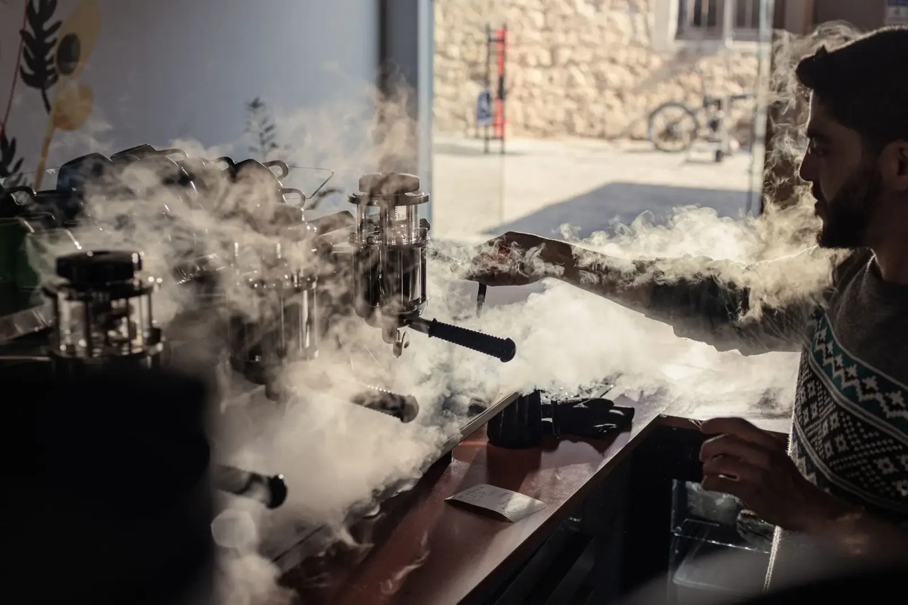
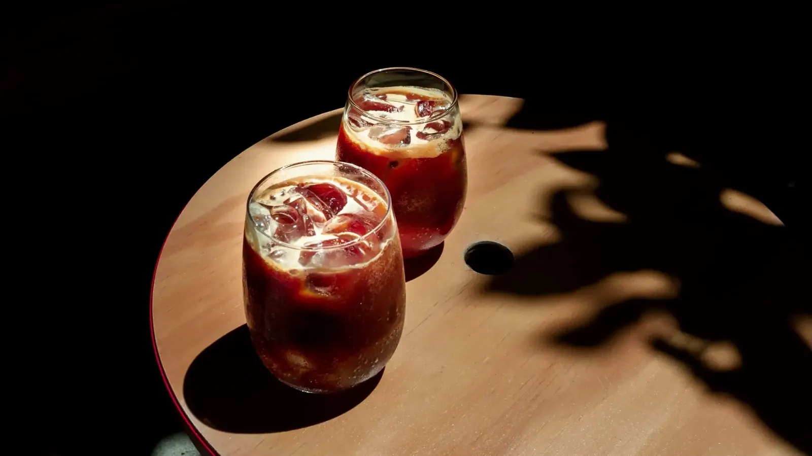
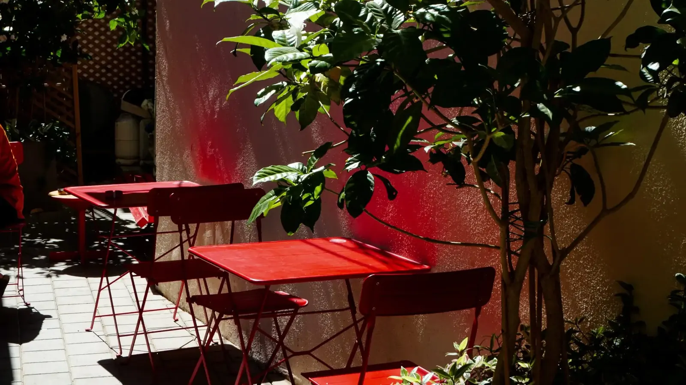
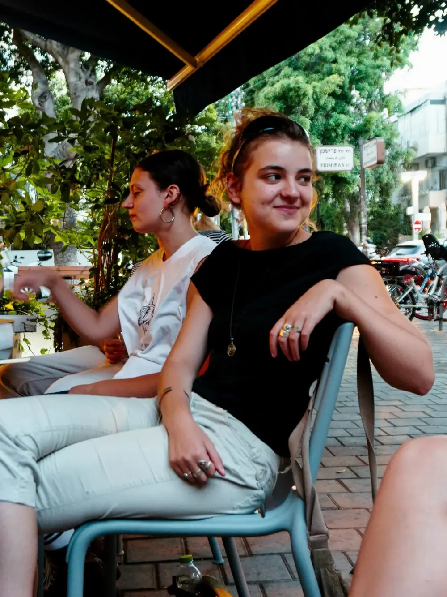
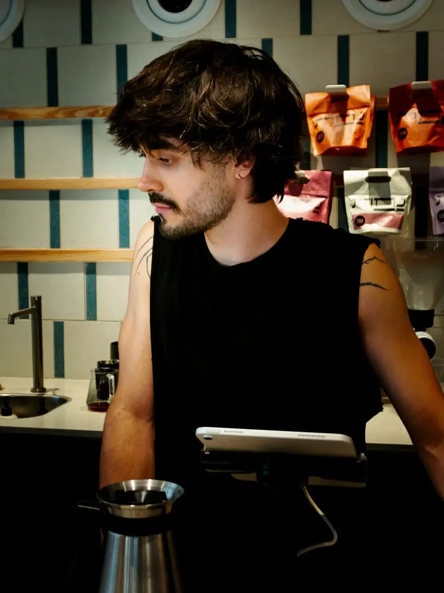
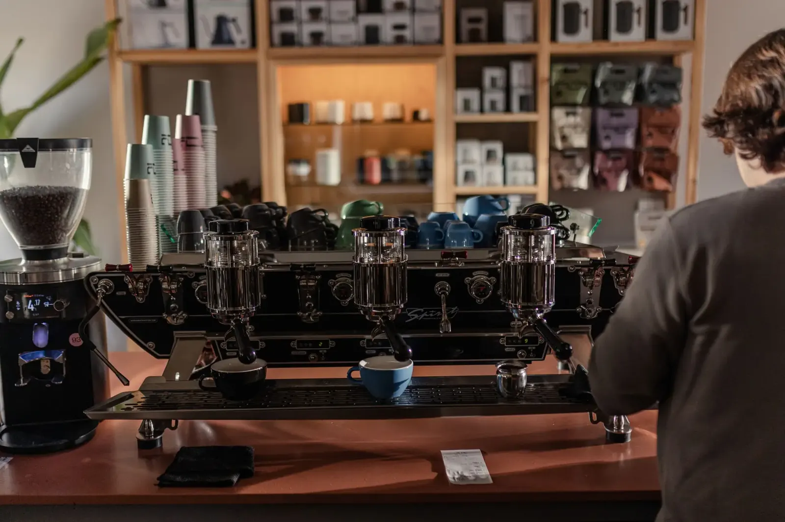

Nahat offerings · 2026
עברנו את כל העולם בשביל הכוס הזאת.
פולי קפה ממגדלים שאנחנו מכירים בשם, נקלים טרי בבית הקלייה שלנו בתחנה, וישר אליכם הביתה.
משלוח חינם בקנייה מעל 150 ש״ח · הנחות קבועות לחברי המועדון
חמש ארצות. חקלאים שאנחנו מכירים בשם.
כל קו על המפה הוא הדרך של הפולים מהחווה אל בית הקלייה שלנו בפארק התחנה.
-
חמש ארצות. חקלאים שאנחנו מכירים בשם.
כל קו על המפה הוא הדרך של הפולים מהחווה אל בית הקלייה שלנו בפארק התחנה.
-
Ethiopia
אתיופיה
Gedeb Woreda
ערש הקפה העולמי. חמיצות פרחונית, יסמין ותה שחור. הזנים שאנחנו הכי אוהבים לקלות בהיר.
כ־2,900 ק״מ עד תל אביב
-
Colombia
קולומביה
Huila
חדשנות ומסורת של מאתיים שנות קפה. שוקולד, פירות יער וגוף עגול. הקלאסיקה שתמיד עובדת.
כ־11,800 ק״מ עד תל אביב
-
Brazil
ברזיל
Daterra
מהחווה שאנחנו גאים לייצג בישראל. אגוזים, קקאו ומתיקות עמוקה. הבסיס המושלם לאספרסו.
כ־10,400 ק״מ עד תל אביב
-
India
הודו
Sethuraman Estate
רובוסטה ספשלטי מהחווה שאנחנו מייצגים. עוצמה, קקאו מריר וקרמה עשירה שמרימה כל תערובת.
כ־4,700 ק״מ עד תל אביב
-
Guatemala
גואטמלה
Antigua
אדמה וולקנית וגובה רב. קרמל, תפוח אדום ואיזון מושלם. קלייה בינונית שכולם מתאהבים בה.
כ־12,200 ק״מ עד תל אביב
-
ביחד, כ־42,000 ק״מ. יותר מסיבוב שלם סביב כדור הארץ, בשביל כוס אחת.
אהבה לקפה, מהשדה ועד לכוס.
אחרי למעלה מ־20 שנה בעסקי הקפה, הבנו דבר אחד: אנחנו לא סובלים מהתמכרות לקפה, אנחנו נהנים ממנה. הקמנו את נחת כדי ללוות את הקפה בכל שלב, מתוך אמונה שטריות, טעם וסחר ישיר הם הבסיס לכוס המושלמת.
אנחנו רוכשים את הפולים בסחר ישיר (Direct Trade) מהחקלאים הטובים בעולם, מקפידים על פולי ספשלטי בציון 80 ומעלה בלבד, וקולים אותם בבית הקלייה שלנו, כדי שתקבלו קפה עשיר, טרי ומלא בטעם.

על הבר בנחת, בוקר רגיל.
״משלמים הוגן יותר, מקבלים את הטוב ביותר.״
המוטו של נחת
- שנים בעסקי הקפה
- 20+
- ציון ספשלטי מינימלי
- 80+
- איך קונים
- Direct Trade
שלא תיתקעו בלי הקפה שלכם בבוקר.
הצטרפו למנוי של נחת, קבלו את הקפה האהוב עליכם קלוי וטרי ישר לדלת, ותיהנו מהנחה קבועה בכל הזמנה. בלי התחייבות, עם המון נחת.
בחרו את הקפה שלכם
הזמנה קבועה שאתם מגדירים, או הזמנה משתנה. למשל קלייה בהירה או מיקס קליות.
קבעו קצב והתחייבות
כל שבועיים או פעם בחודש.
צברו נקודות ודרגות
כל תשלום צובר נקודות שמעלות אתכם בדרגות המועדון, עם הטבות.
- 3 חודשים
- 5%הנחה קבועה
- חצי שנה
- 7%הנחה קבועה
- שנה
- 10%הנחה קבועה
להרכבת המנוי שלי ביטול חופשי בסיום ההתחייבות · דילוג על משלוח בכל עת

Come visit
בתי הקפה של נחת.
-
ריינס 20
תל אביב · א׳ עד ש׳, 7:30 עד 19:00
ניווט בוויז -
אשקלון 16 · פארק התחנה
תל אביב · א׳ עד ש׳, 7:30 עד 19:00
ניווט בוויז -
זמנהוף 1 · כיכר דיזנגוף
תל אביב · א׳ עד ש׳, 7:30 עד 19:00
ניווט בוויז
הצטרפו לקהילה שלנו באינסטגרם: @nahat.coffee




קפה טוב זה תנאי עבודה.
אנחנו מלווים בתי קפה ומשרדים בכל הארץ: פולים טריים בקלייה שבועית, ציוד מקצועי, הדרכות בריסטה והרצאות קפה לצוות.
- אספקה שבועית קבועה
- השאלת ציוד ותחזוקה
- סדנאות והרצאות לצוות
רוצים את הקפה הזה גם במשרד? דברו איתנו על קפה לעסק.